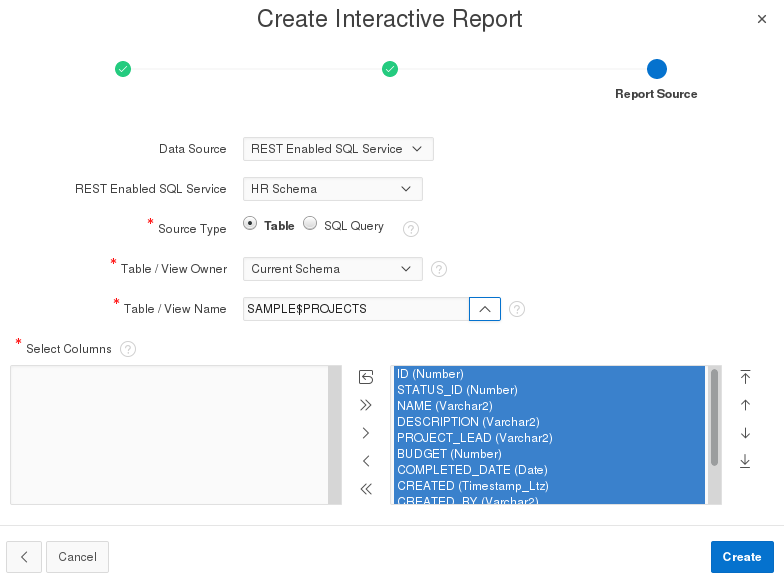

Oracle Application Express 18.1: Using REST Enabled SQL Service
Reference (4 of 4)
Before You Begin
This 5 minute tutorial shows you how to create a new
application using the REST Enabled SQL Service reference. This
is the fourth in the series Oracle Application Express 18.1:
Using REST Enabled SQL Service Reference. Read the
tutorials in sequence:
Oracle Application Express 18.1: Using REST Enabled
SQL Service Reference (4 of 4)
Background
In this OBE, you will learn how to create a new application in
the obe workspace using the REST enabled SQL
service reference to the hr schema.
What Do You Need?
Install the latest version of the Oracle VM VirtualBox
Download and import the Database App Development VM in to
the Oracle VM VirtualBox Note: SQL Developer 4.2, Oracle Database 12c, and
Oracle Application Express 18.1 are installed in the Database
App Development VM
Create
an Application
In this section, you will learn how to create an application
using REST Enabled SQL reference to the hr schema. To create the
app:
Log in to Oracle Application Express 18.1 using these
credentials:
Workspace: Enter obe
Username: Enter obe
Password: Enter oracle
Click Sign in
On the workspace home page, click App Builder.
Click Create.
Select New Application and click Next.
The Create an Application wizard opens.
In the Name field, enter REST Enabled SQL.
Note: Leave all other fields blank in this dialog. For now,
you will create the empty shell of the application.
Click Create Application. Once the
application is created, the application home page opens, as
shown in the screenshot. The application home page displays
the application ID, application name, and three default pages.
In this section, you will learn how to add pages to the
application REST Enabled SQL. You will add the
following two pages:
Interactive Report
Calendar
2.1 Add an Interactive Report
To add an interactive report:
In the application REST Enabled SQL home page,
click Create Page.
In the Create a Page dialog, select Report.
In the Create Page dialog, select Interactive Report.
In the Create Interactive Report - Page Attributes dialog,
enter the following to define the page attributes:
Page Name: Enter Projects
Page Mode: Select Normal
Breadcrumbs: Select Breadcrumbs
Parent Entry: Select No parent entry
Click Next.
In the Create Interactive Report - Navigation Menu dialog,
enter the following to define the navigation for this page:
Navigation Preference: Select Create
a New Navigation Menu Entry.
New Navigation Menu Entry: Displays the page
name.
Parent Navigation Menu Entry: Select -No
Parent selected-
Click Next.
In the Create Interactive Report - Report Source dialog,
enter the following to define the data source for this report:
Data Source: Select REST
Enabled SQL Service
REST Enabled SQL Service: Select HR
Schema
Source Type: Select Table
Table/View Owner: Select Current
Schema
Table/View Name: Select SAMPLE$PROJECTS Note: Since you have connected
to the hr schema, you will see that list of tables available
in this field belongs to the Sample Project sample dataset.  Description
of the illustration create_report_datasource.png
Click Create. The wizard creates and adds
the new page Projects to the application REST Enabled
SQL. The page opens in Page Designer.
Click the Save and Run to run this page.
On the Sign in page of the application REST Enabled SQL,
enter the following credentials:
Exit the running
application and click the Up Arrow next to application ID.
The App Builder home page appears.
2.2 Add a Calendar
To add a calendar to the application REST Enabled SQL:
On the App Builder home page, select the REST Enabled
SQL application.
On the application home page, click Create Page.
In the Create Page dialog, select Calendar and click
Next.
In the Create Page - Page Attributes dialog, enter the
following to define the page attributes:
Page Name: Enter Tasks Calendar
Page Mode: Select Normal
Breadcrumbs: Select Breadcrumbs
Parent Entry: Select No parent entry
Entry Name: Displays the page name that you have
entered
Click Next
In the Create Page - Navigation Menu dialog, enter the
following to define the navigation for this page:
Navigation Preference: Select Create
a New Navigation Menu Entry
New Navigation Menu Entry: Displays the page name.
Parent Navigation Menu Entry: Select -No
parent selected-
Click Next
In the Create Page - Source dialog, enter the following to
define the data source for this page:
Data Source: Select REST Enabled
SQL Service
REST Enabled SQL Service: Select HR
Schema
Source Type: Select Table
Table/View Owner: Select Current
Schema
Table/View Name: Select SAMPLE$PROJECTS_TASKS Note: Since you have connected
to the hr schema, you will see that list of
tables available in this field belongs to the Sample Project
dataset.
In the Create Page - Settings dialog, enter the following to
define the page:
Display Column: Select Name
Start Date Column: Select Start
Date
End Name Column: Select End
Date
Show Time: Select No
Click Create. The wizard creates and adds
the page Task Calendarto the application REST
Enabled SQL. The page opens in Page Designer.
This page uses the REST Enabled SQL reference to communicate
to the remote data source containing the hr schema.
Click the run icon to run this page. Once the page runs
successfully, the sign in page of application REST Enabled
SQL opens in a new tab.
Sign in to the application REST Enabled SQL using the
following credentials:
Username: Enter obe
Password: Enter oracle Note: The application REST Enabled SQL
has two pages in it - Tasks Calendar and Projects. You will
see that the Calendar page contains the data from the hr
schema.
Description
of the illustration app_projects_cal.png
This completes the tasks of creating the application REST
Enabled SQL and adding pages to it. You can add more pages to it
such as charts, list views, reports and so on.

 Before You Begin
Before You Begin Create
an Application
Create
an Application  Add
Pages in the Application
Add
Pages in the Application